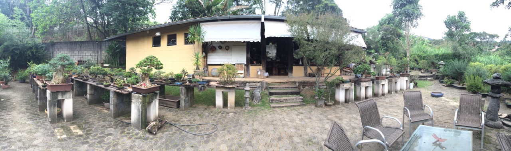

<div class="home">
   <main>
       
       <p class="descricao-home">
       Criada em 1997 por Rock Junior, a escola Terra Bonsai que fica em Nova Lima/MG, tem como principal objetivo fomentar e promover o crescimento e amadurecimento da arte em nosso país, principalmente com o cultivo das plantas nativas que têm um potencial incrível.
       </p>
       <p class="descricao-home">
       Rock Junior ministra cursos regularmente na Escola Terra Bonsai, é discípulo do Mestre Salvatore Liporace (discípulo do Mestre Massahiko Himura) e organizador da Escola Bonsai Alta Qualidade (EBEB), reconhecida pela UBI (União Bonsai Itália) e pela IBS (Bonsai e Suiseki instrutori), aqui no Brasil. Trata-se um projeto que nasceu com o objetivo principal de desenvolver com qualidade e profissionalismo da Arte Bonsai. Seguindo os conceitos das escolas japonesas e européias de técnica, filosofia, prática e espiritualidade. Com duração de três anos, esse curso formará um grupo de mestres que terão como principal compromisso estender esses conhecimentos aos seus futuros alunos.
       </p>
   </main>
</div>
